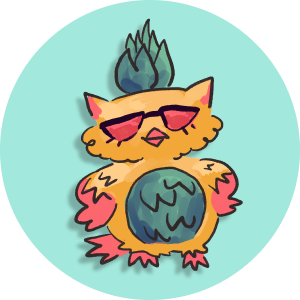
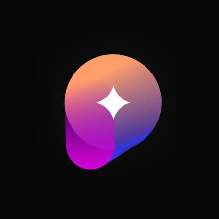

Digital Strategy Intern
Supporting USG's digital presence across social media, email marketing, and website management, reaching USC's 20,000+ undergraduate students.

Programs Coordinator
Supporting programs planning for Southern California's premier hackathon for women and students with marginalized gender identities in tech.

Compass Member
Developing core product management competencies — user research, wireframing, market analysis, and product prioritization frameworks — through a structured, workshop-based curriculum. Collaborating in cross-functional student teams to analyze real-world user pain points and build business sense through case studies.
Publicity and Documentation Chair
Managed outward-facing communications and content strategy for ASNUO's Instagram account and student digest, reaching over 4k students weekly. Held weekly office hours and designed flyers to promote student events.
Volunteer Assistant Archivist
Managed and organized large-scale digital collections for historical preservation, implementing metadata tagging standards. Analyzed, uploaded, and sorted 120+ items for the GLBT Historical Society.
Operations and Social Media Manager
Served as Operations and Social Media Manager, coordinating schedules and keeping the team on track toward project deadlines. Managed the club's social media to promote events and grow member turnout.